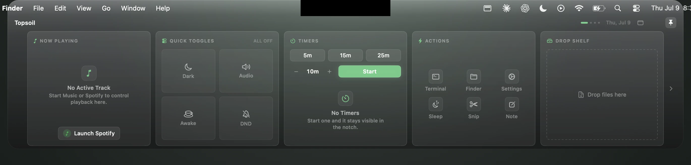
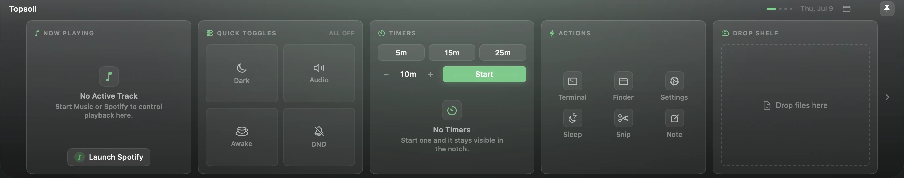
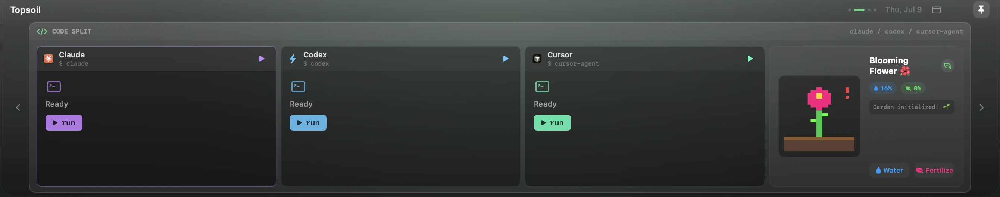
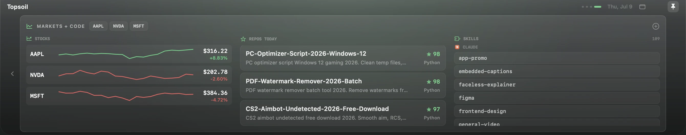
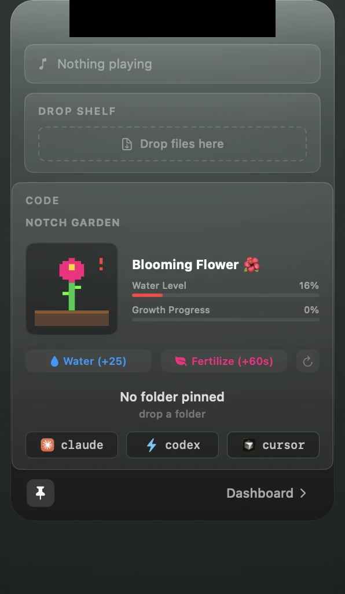
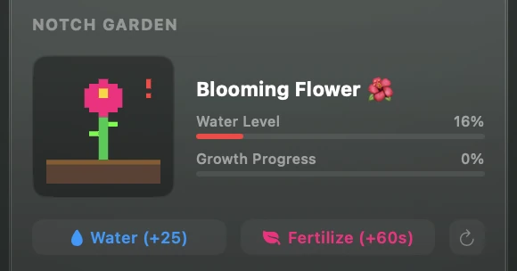
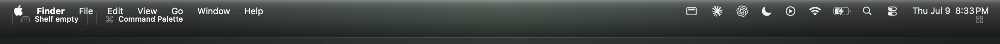

For Mac · macOS 14 and later
Your notch is now the best part of your screen.
Topsoil turns the camera cutout into a live dashboard for coding agents, music, timers, and files.

Here's the whole thing in eleven seconds.
One click on the notch. The panel springs open, pages slide, and it folds back into the hardware.
Real footage. No mockups.
Everything, one glance away.
Three pages ship by default. Click the notch below to fold the panel away and back.



Now Playing, Quick Toggles, Timers, Actions, and a Drop Shelf for local files.
Three agents, one bar.
Claude, Codex, and Cursor run in live terminal panes docked inside the notch. Start a run and glance up for status.
It opens when you reach for it.
Hover the notch and a compact panel drops with music, files, and your next timer. Move away and it folds back into the bezel.


Topsoil grows a garden in your notch.
A pixel plant lives beside your terminal panes. It grows while you code, three times faster while your agents run, and it wilts if you disappear. Water it. Ship things.
Or stretch it across the top.
Wide bar mode turns the panel into a full width status strip: now playing, shelf count, and your repo at a glance.

Three pages by default. More when you want them.
Now Playing, Quick Toggles, Timers, Actions, Drop Shelf.
Claude, Codex, and Cursor terminal panes with a pinned project.
Tickers with sparklines, trending repositories, installed skills.
Optional modules turn on from Settings and slot into the same pages:
The panel reads the screen safe area, hugs the hardware exactly, and never covers the camera or the privacy light.
Honest specs.
Requirements
- macOS
- 14 Sonoma or later
- Build
- Apple silicon
- Notch
- Optional
Footprint
- Stack
- Swift 6, SwiftUI
- Runtime
- No Electron
- Dock icon
- None, menu bar app
Privacy
- Your files
- Stay local
- Accounts
- None
- Permissions
- Asked on first use
Common questions
Does it work over fullscreen apps?
Yes. An auxiliary panel shows the surface above a fullscreen Space, so the notch stays useful while you present or watch.
Is anything uploaded anywhere?
Your content never leaves your Mac: shelf files stay on disk, settings stay local, and there is no account or telemetry. Optional modules fetch public data only, such as stock quotes, GitHub trends, and lyrics. Details on the privacy page.
Can it block the camera or the privacy light?
No. The panel reads the exact safe area insets and paints around the hardware, never over it.
What if my Mac has no notch?
The panel docks to the top center of any display, external monitors included. The notch is a home, not a requirement.
What does the Code page need?
Any of the Claude, Codex, or Cursor command line tools on your PATH. Panes show a ready state until you run one.